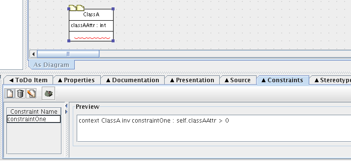

ArgoUML's Constraints Tab allows you to enter and view OCL constraints on the selected design element. The Object Constraint Language (OCL) is a simple predicate logic language that allows you to add more meaning to your designs.
While editing the constraint, the Constraints Tab panel changes into an editor, which looks as the image below. It offers many functions to help generate correct syntax.
Back to ArgoUML Tours
Back to ArgoUML Home